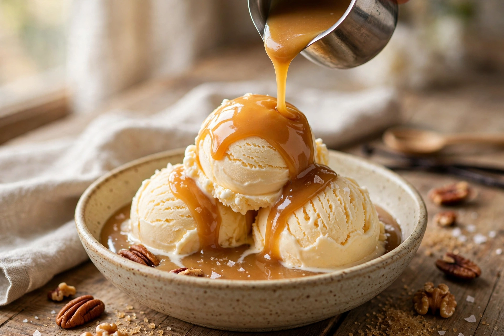

Butterscotch is a type of confectionery whose primary ingredients are brown sugar and butter. It differs from caramel, which is made with white granulated sugar, and from toffee by the proportions and cooking temperature.
Butterscotch originated in Doncaster, Yorkshire; confectioner Samuel Parkinson began making it in 1817, and it was presented to Queen Victoria in 1851. The name may derive from the candy being “scotched” (scored) for breaking, or from butter being scorched.
Butterscotch is made as hard candy, as a sauce for ice cream and puddings, and as a flavouring for puddings, cookies, and chips used in baking. Parkin and sticky toffee pudding share its brown-sugar and butter character, like the butter used in beurre manié though for sweet ends.